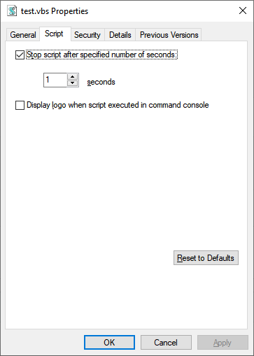

SHELLEX is a command from the SYSUTILS plugin, available from;
Take Command Plugins for TCC and TCC/LE Command Prompts
I am using the 64-bit version of SYSUTILS, as I am using the 64-bit version of TCC.
From the SYSUTILS.TXT file;
Code:
SHELLEX
ShellExecute with registered or context menu verb
SHELLEX [/C] [/V verb] <file> [<arguments> [<directory>]]
/C use context menu
/V verb "print", "edit", "explore" et c.
(with /C) "properties", "preview", et c. Without "/V verb",
the default verb is used if available, else "open" is used.
/D (debug) show parameter parsing without executing
<arguments> and <directory> apply to launching executables
When appropriate, <file> may specify a URL, a directory or a drive
Quote parameters containing whitespace; escape necessary quotes as \"
Here is how to create, from TCC, a .WSH file using SHELLEX;
Code:
shellex /c /v "properties" test.vbs
From the context menu, Script tab;

I can make the changes that I want, click Apply (or OK), and the test.wsh file is created for me, thus;
Code:
e:\utils>type test.wsh
[ScriptFile]
Path=E:\Utils\test.vbs
[Options]
Timeout=1
DisplayLogo=0
This saves me from having to start Explorer, and then right-click on the .vbs file.
Joe
Source: Creating a .WSH file using SHELLEX | Take Command (28 July 2020 9:48 AM) |